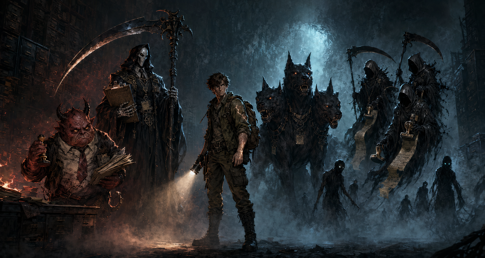

Exploração
O jogador percorre labirintos escuros procurando caminhos, atalhos, chaves e portas monumentais.
Maze-crawler 2D de sobrevivência
Dante foi morto por engano. Agora, perdido na burocracia infernal, ele precisa provar que não e o lendário vilão que a Morte queria apagar.
Prologo
Dante levava uma vida comum, até o dia em que o impossível aconteceu: um raio rasgou um céu limpo e o atingiu em cheio.
Não foi azar. Foi erro.
Nos registros do submundo, existia outro nome: Dante, o Maligno, uma entidade destinada ao abismo eterno. Em meio a pilhas de almas, protocolos e assinaturas apressadas, a Morte selecionou a ficha errada Dante morreu por engano.
Antes que qualquer funcionário percebesse a falha, sua alma já havia sido despachada, catalogada e enviada para os portões do inferno — um lugar onde erros não são corrigidos, apenas apagados. Agora, preso em um sistema que não admite falhas, Dante precisa atravessar setores esquecidos do submundo, enfrentar criaturas que não questionam ordens e reunir provas de que não pertence àquele lugar. Seu destino depende de alcançar o Terminal Central, solicitar um raro e quase impossível Estorno de Alma.
A um problema: A morte sabe que errou e prefere ELIMINAR do que admitir a falha.
Gameplay e ambientação
KingEscape e um maze-crawler top-down em que o medo vem do que o jogador nao consegue ver. A descarga elétrica que matou Dante deixou sua percepção instável, criando uma visão limitada e cheia de falhas.
O jogador percorre labirintos escuros procurando caminhos, atalhos, chaves e portas monumentais.
A luz revela perigos, mas depende de bateria. Gastar luz demais pode transformar um corredor simples em armadilha.
Inimigos perseguem Dante pelas sombras. Fugir, memorizar rotas e escolher quando avancar e parte da tensao.
Cada setor exige uma prova diferente para abrir passagem: fichas, distrações, arquivos e confrontos.
Três setores, uma burocracia infernal
Dante acorda no processamento de almas perigosas, cercado por rochas incandescentes, documentos carbonizados e filas de condenados. Ele precisa coletar Fichas de Identificacao para provar que sua ficha nao pertence ali.
Boss: O Capeta da RecepçãoA temperatura cai, a nevoa cresce e portas gigantes surgem sem explicacao. As Almas Errantes drenam energia ao toque.
Boss: Almas ErrantesNo nucleo gelado do inferno ficam os registros de todas as almas. As paredes parecem gavetas infinitas e o Cerbero para proteger os registros.
Boss final: A MorteElenco principal
Cada personagem existe para reforcar a mistura de terror, humor sombrio e burocracia absurda do jogo.

Protagonista comum, teimoso e assustado, mas decidido a provar que ainda deveria estar vivo.
Chefe fria do sistema de coleta de almas. Prefere apagar Dante a deixar o erro aparecer.
Gerente regional do inferno, furioso porque a ficha de Dante nao carrega corretamente.
Guardiao que caca pelo faro. Mesmo sem enxergar Dante, consegue sentir sua presenca no labirinto.
Funcionario espectrai que atravessam paredes para corrigir falhas do sistema.
Sombras esquecidas pela burocracia, presas entre portas, nevoa e corredores que nunca terminam.
Conclusao
Ao chegar ao terminal central, Dante confronta a Morte e revela o erro: ele nunca deveria ter sido coletado. Depois de passar por inúmros corredores,e passar pela morte, ele consegue o Estorno de Alma e retorna ao mundo real, chamuscado e confuso, mas vivo.
O inferno corrige seu ID. Dante acorda olhando para o céu limpo, sabendo que escapou não apenas da Morte, mas também do maior erro burocratico do submundo.